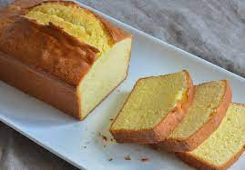

Pound Cake

Description
Elegant and simple, this pound cake is the little black dress of dessert.
Ingredients
- 2 cups of flour
- 1 cup of sugar
- 1 cup or 2 sticks of unsalted butter
- 2 teaspoons of vanilla extract
- 1 teaspoon of baking powder
- 4 eggs
- 1/2 teaspoon of salt
- 3/4 cup of milk - optional
Steps
- Preheat the oven at 350 degree Fahrenheit
- Mix sugar and butter for about 8 min at medium setting
- Add each egg one at a time to the mixture
- Add vanilla extract, salt, baking powder, and milk
- Slowly add the flour
- Mix til the batter has a good consistency
- Bake it for about an hour